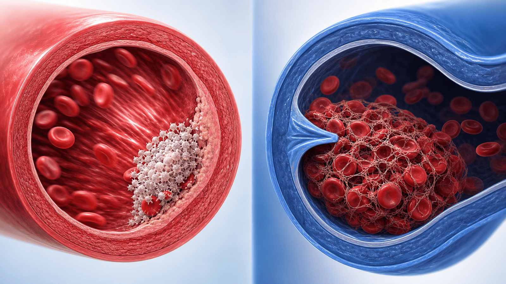
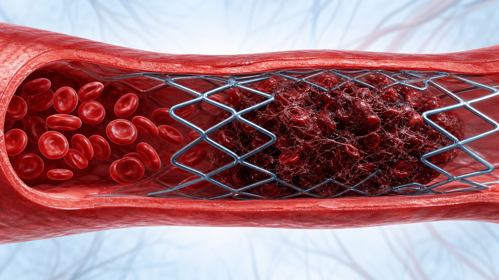
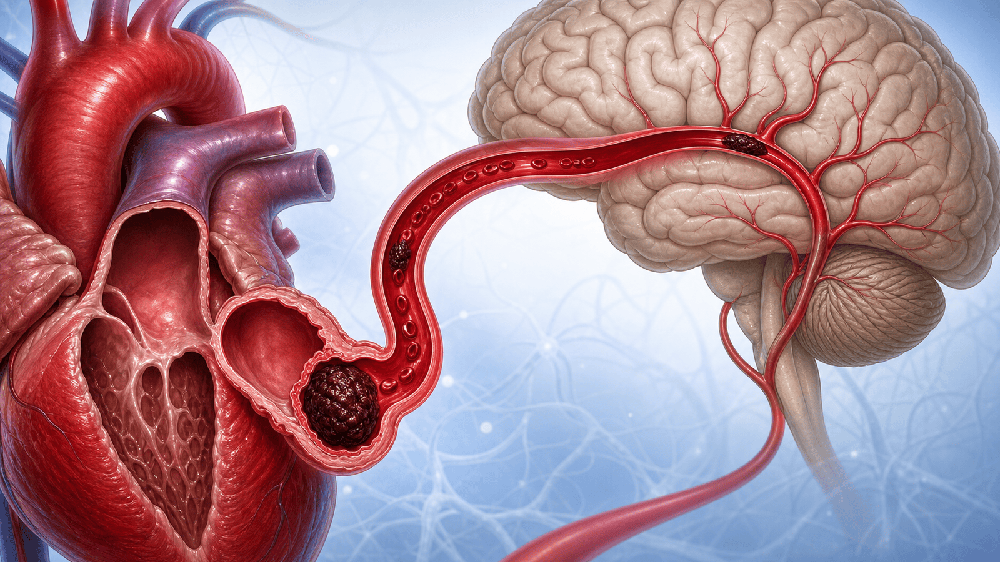
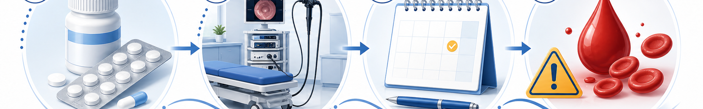

같은 ‘피 약’이라도 종류마다 쓰임과 주의점이 다릅니다
어디에 생기는 혈전을 막느냐에 따라 나뉩니다
| 항혈소판제 | 항응고제 | 혈전용해제 | |
|---|---|---|---|
| 무엇을 하나 | 혈소판이 뭉치는 것을 막음 | 피가 굳는 단백질을 막음 | 이미 생긴 혈전을 녹임 |
| 주로 막는 병 | 심근경색 · 뇌경색 · 다리 동맥 | 심방세동 · 정맥 혈전 | 급성 뇌경색·심근경색 응급 |
| 예 | 아스피린, 클로피도그렐 | 와파린, 새 경구 항응고제(4종) | 병원에서 주사로만 |
그래서 막는 약도 달라집니다

혈소판이 뭉치지 않게 해 동맥이 막히는 것을 막는 약입니다
심장 판막 문제가 없는 심방세동에는 새 경구 항응고제를 주로 씁니다
스텐트 안에서 피가 굳으면 심근경색·돌연사로 이어질 수 있습니다

심장 안에 생긴 혈전이 뇌로 날아가 뇌졸중을 일으킵니다

병을 겪은 뒤의 재발 예방과, 병이 없을 때의 예방은 권고가 다릅니다
‘다 끊고 오세요’는 위험합니다 — 약마다, 시술마다 다릅니다

출혈을 되돌리는 치료가 병원에 준비돼 있습니다
스스로 끊거나 줄이지 말고 처방 의사와 상의하세요
QR을 스캔하면 같은 자료를 휴대폰에서 다시 열 수 있습니다